Transfert des commandes.
I- Dispatch Livraison
A- Dispatch manuel.
- Demande de chargement
Role: ADV
- Accédez à la page Demandes de Transfert.
- Clicker sur le bouton "Ajouter" pour démarrer le dispatch.
- Cliquer sur la "zone grise" pour sélectionner le récepteur.
- Ajouter le nom d'utilisateur, sélectionner l'agence, et cliquer sur "Charger données".
- Sélectionnez votre récepteur et cliquez sur "Dispatch Manuel".
- Pour filtrer les commandes, utilisez le nom d'utilisateur du "Prévendeur", la date de début (un jour avant la commande), ou l'identifiant du "bon de commande".
- Ensuite, cliquez sur "Charger données" pour afficher les commandes qui ont été prises par le "Prévendeur".
- Assurez-vous de vérifier les bonnes commandes, puis choisissez entre transférer toutes en une fois en cliquant sur "Ajouter Tout", ou transférer une par une en cliquant sur la ligne de commande.
- Ensuite, cliquez sur le bouton "Valider" pour terminer avec succès la première partie de la dispatch.
Une fenêtre apparaîtra vous permettant de sélectionner les commandes. Vous devrez simplement filtrer les commandes que vous souhaitez transférer.
Pour vérifier que vous êtes sur la bonne voie, vous pouvez retourner à la page "Demandes de Transfert" et utiliser le filtre pour trouver la nouvelle demande de transfert avec le statut "10-soumis au magasinier".
Dispatch status
10 - soumis au magasinier
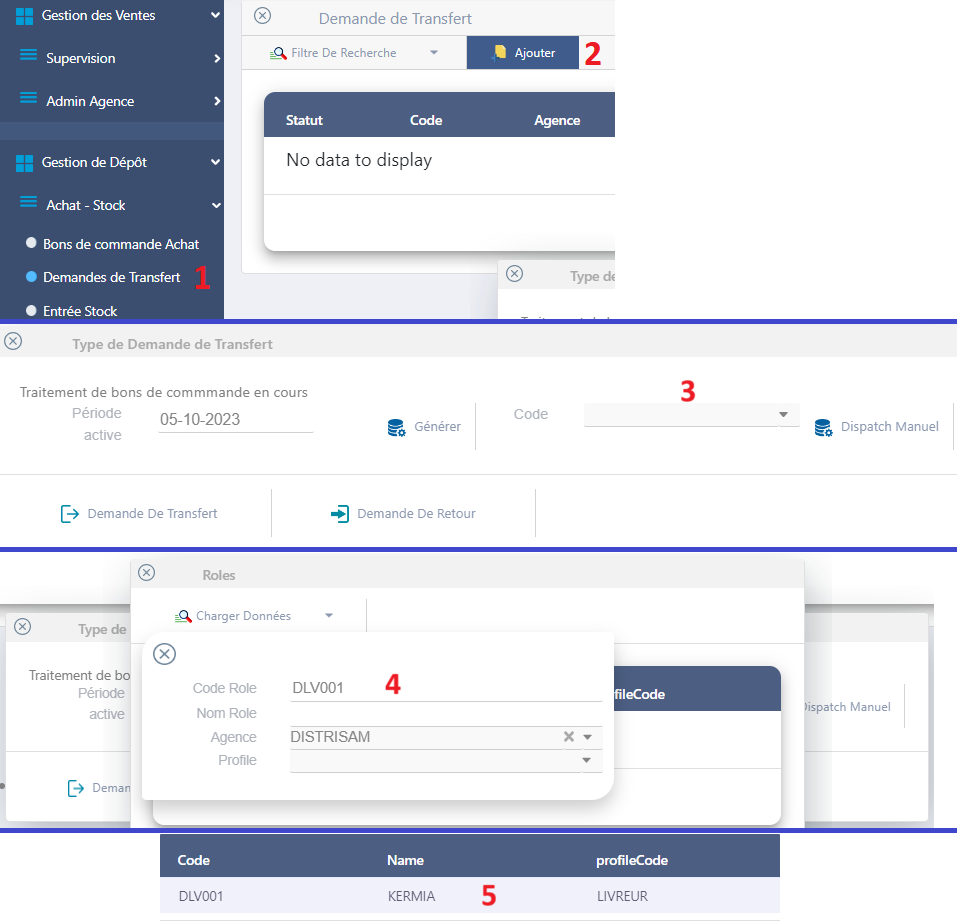
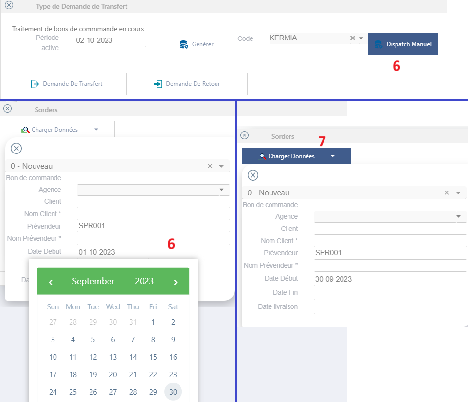
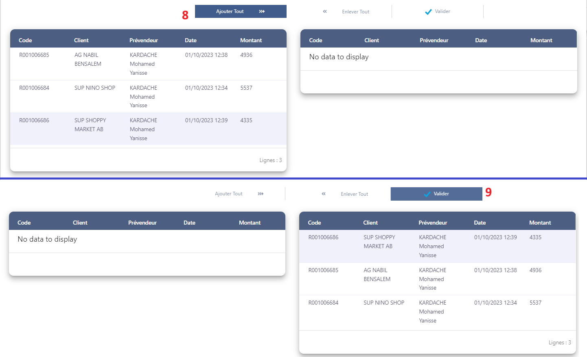
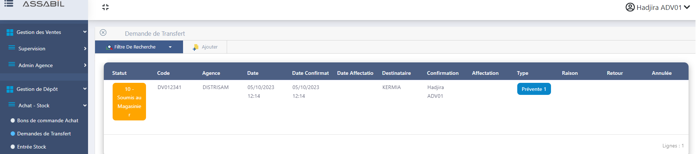
- Valider le chargement
Role: GDS, DLV/VDD
- Accédez à la page 'Demandes de Transfert' et chargez les données. Sélectionnez le transfert identifié par le statut "Soumis au magasinier" (rectangle orange)
- Vérifiez la quantité à affecter, puis cliquez sur 'Valider'.
- Cliquez sur le bouton 'Soumettre Au Vendeur' pour transmettre les bons de livraison au compte du vendeur.
- Connectez-vous au compte du vendeur (DLV/VDD), puis effectuez une synchronisation complète.
- Accédez à la page 'Demandes de chargement' identifié le chargement par le statut (40), puis cliquez sur "Valider".
- Cliquez "la flèche next".
- Cliquez "Valider".
- Confirmer la validation du chargement "OUI".
- Retournez à la page 'Demandes de chargement'. Vous remarquerez que le statut est maintenant (50). Cliquez simplement sur l'icône de synchronisation et attendez que la synchronisation se termine.
Dispatch status
30 - Ajusté
Dispatch status
40 - Soumis au vendeur
Dispatch status
45 - Synchronisé
Dispatch status
50 - Acceptée
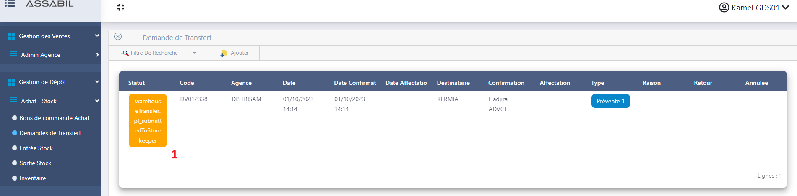
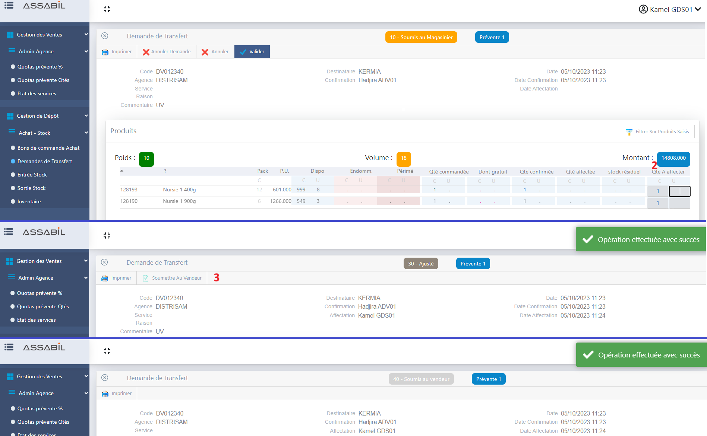
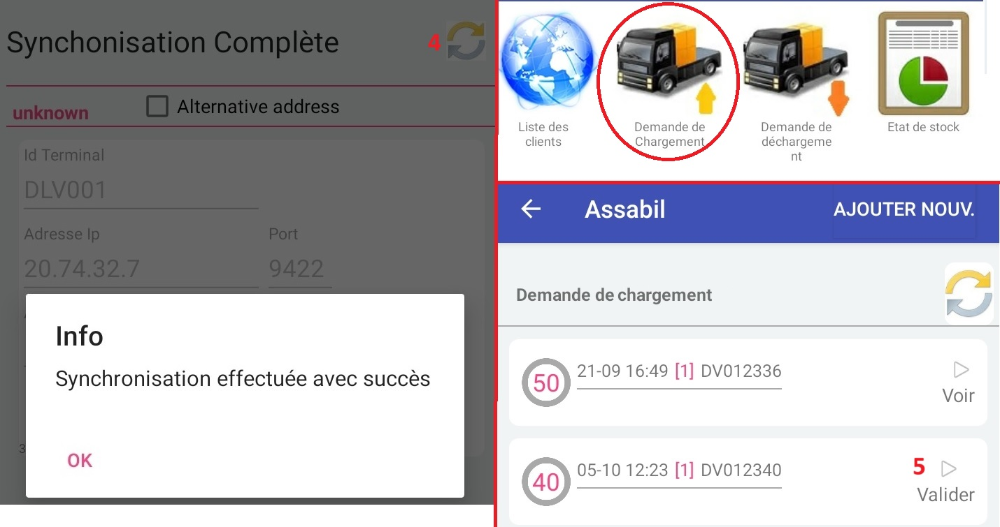
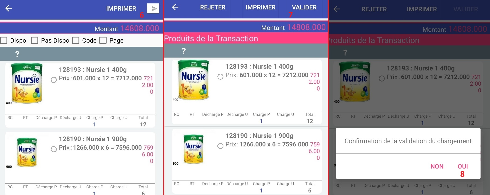
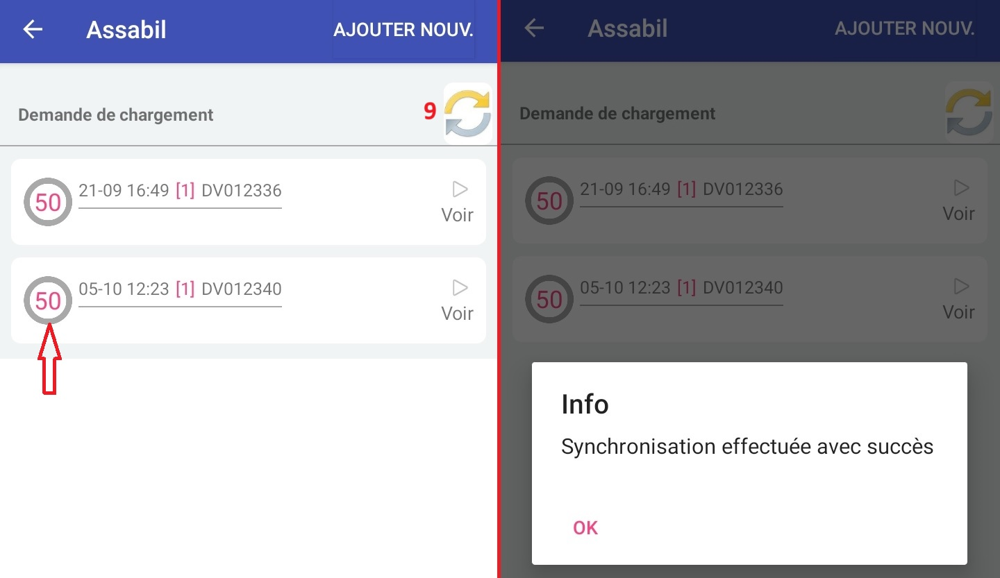
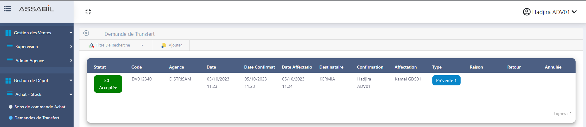
B- Dispatch auto.
II- Dispatch - Cage Van
Les étapes de cette phase sont presque identiques pour le chargement et le déchargement ; suivez les images ci-dessous alors que nous le démontrons avec le chargement.
A- Demande de chargement/déchargement
Role: DLV/VDD
- Accédez à la page "Demandes de (dé)chargement", puis cliquez sur "AJOUTER NOUV".
- Ajouter la quantité de (dé)changement, cliquez sur la ligne correspondante au produit, puis saisissez la quantité dans les colonnes (P, U) (carton, unité).
- Cliquez "la flèche next".
- Cliquez "Valider".
- Confirmer la demande de (dé)chargement "OUI".
- Retournez à la page "Demandes de (dé)chargement". Vous remarquerez que le statut est maintenant (0). Cliquez simplement sur l'icône de synchronisation et attendez que la synchronisation se termine.
- Connectez-vous au compte du vendeur (DLV/VDD).
Dispatch status
0 - Nouveau
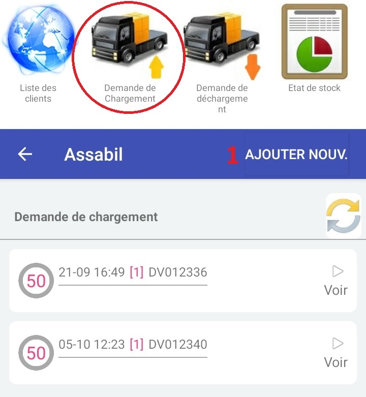
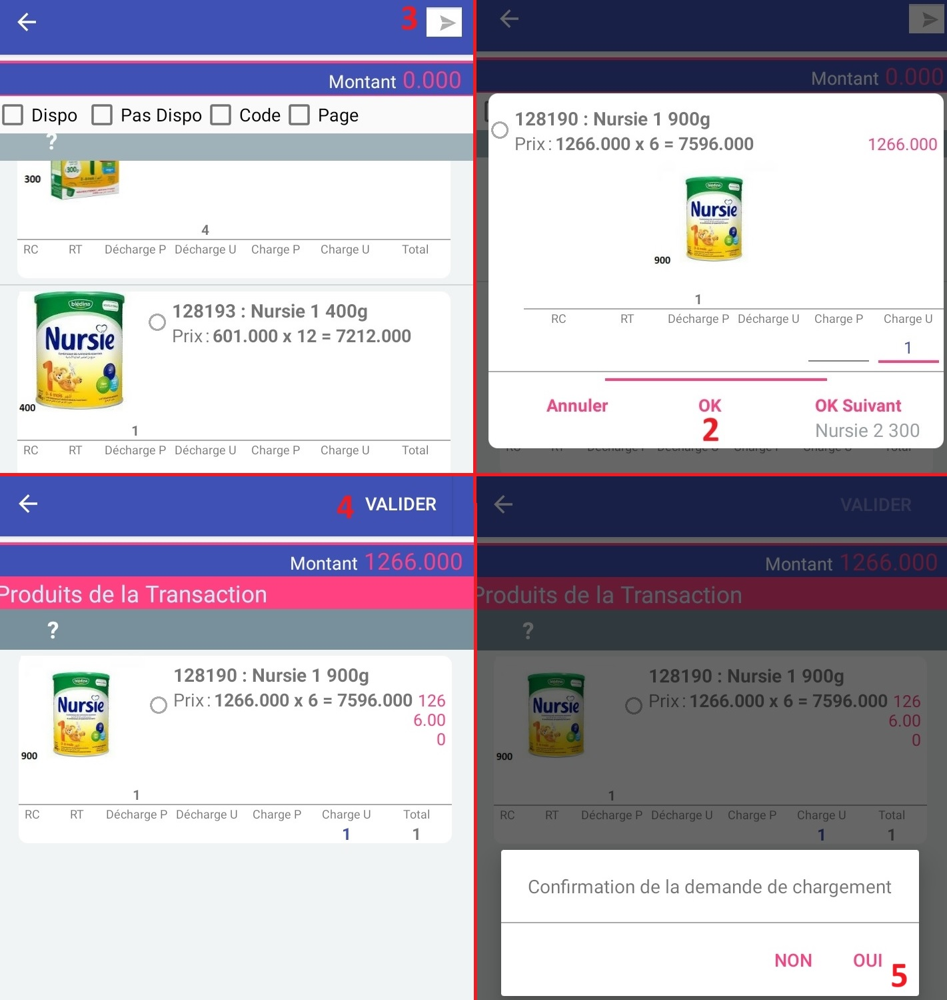
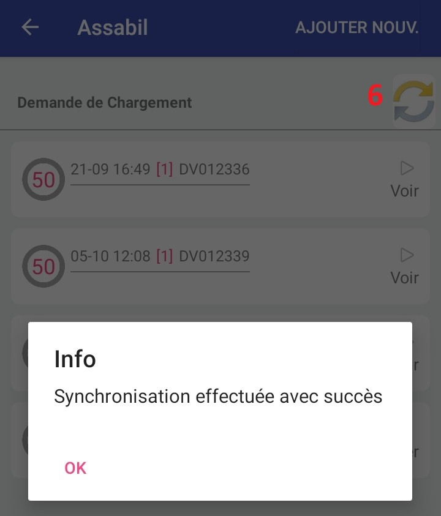
B- Confirmation les quantités requises pour le chargement/déchargement
Role: ADV
- Accédez à la page "Demandes de Transfert", puis charger les donnée et sélectionnez le nouveau (dé)chargement.
- Cliquez "Confirmer Les Qantités Demandées"
- Vérifiez la "Qty confirmée", puis cliquez sur 'Valider'.
Dispatch status
10 - soumis au magasinier
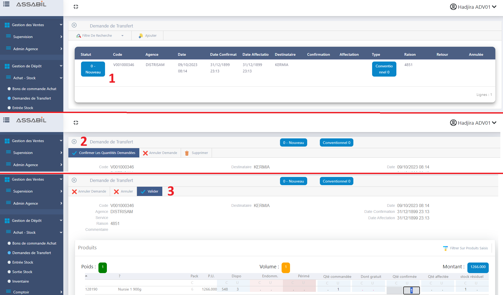
C- Valider le chargement/déchargement.
Role: GDS, DLV/VDD
- Accédez à la page "Demandes de Transfert" et chargez les données. Sélectionnez le transfert identifié par le statut "Soumis au magasinier" (rectangle orange)
- Vérifiez la quantité à affecter, puis cliquez sur "Valider".
- Cliquez sur le bouton "Soumettre Au Vendeur" pour transmettre les bons de livraison au compte du vendeur.
- Connectez-vous au compte du vendeur (DLV/VDD), accédez à la page "Demandes de (dé)chargement" et Cliquez sur l'icône de synchronisation.
- Identifié le (dé)chargement par le statut (40), puis cliquez sur "Valider".
- Cliquez "la flèche next".
- Cliquez "Valider".
- Confirmer la validation du (dé)chargement "OUI".
- Retournez à la page "Demandes de (dé)chargement". Vous remarquerez que le statut est maintenant (50). Cliquez simplement sur l'icône de synchronisation et attendez que la synchronisation se termine.
Dispatch status
30 - Ajusté
Dispatch status
40 - Soumis au vendeur
Dispatch status
45 - Synchronisé
Dispatch status
50 - Acceptée
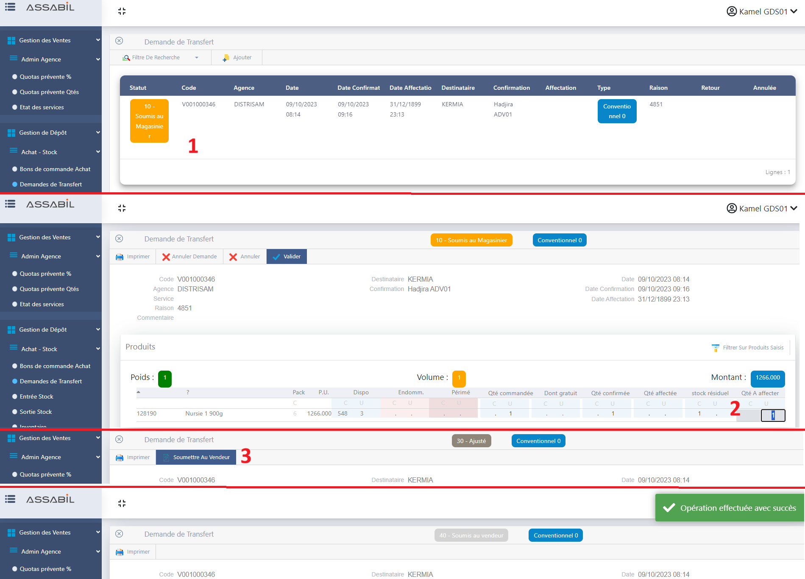
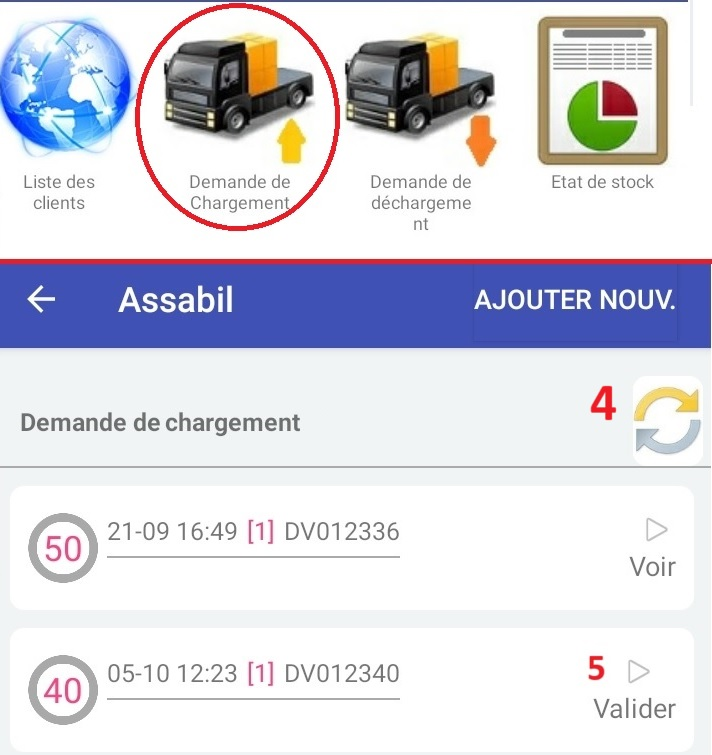